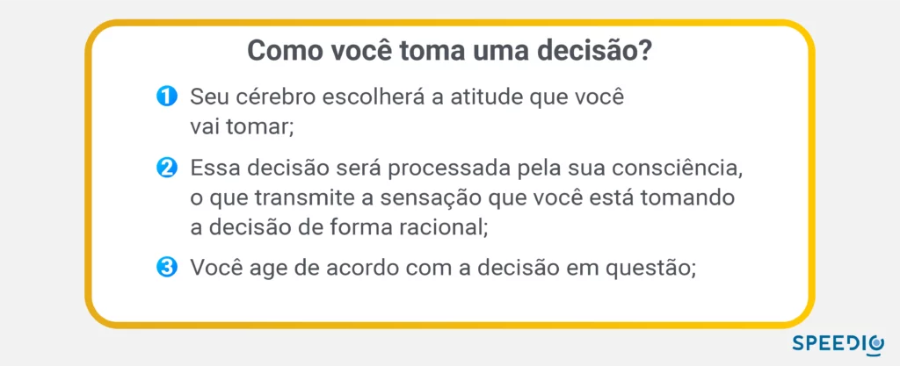

Artigos da Categoria
6 gatilhos mentais para vendas
Se você trabalha com vendas e ainda não utiliza gatilhos mentais, é claro que você está perdendo tempo e dinheiro. Isso mesmo: essa é uma técnica eficiente, rápida e certeira que você pode aplicar em um diálogo com seu potencial cliente e finalmente convertê-lo em uma venda. As técnicas abaixo funcionam tanto pro mercado B2C quanto pro B2B.
Neste post você verá
O que são gatilhos mentais?
Os gatilhos mentais são ferramentas poderosas que podem ser usadas para influenciar as pessoas em suas decisões, comportamentos e emoções. Essas técnicas psicológicas são baseadas na compreensão das motivações e tendências humanas, e podem ser usadas para persuadir e motivar as pessoas de forma eficaz.
Existem muitos tipos diferentes de gatilhos mentais, e cada um tem suas próprias características e aplicações específicas.
Alguns exemplos comuns incluem a escassez, que explora a tendência humana de valorizar algo mais quando é percebido como raro ou limitado e que ela pode perder; a prova social, que usa o comportamento de outras pessoas como uma forma de validar uma ideia ou produto; e a reciprocidade, que usa a tendência das pessoas de retribuir um favor ou gesto generoso.
Como usar gatilhos mentais para vender?
Você pode usar gatilhos mentais em uma variedade de contextos, incluindo marketing digital (inbound marketing ou outbound), publicidade, vendas, negociação, política e até mesmo em nossas interações diárias com outras pessoas. Eles são particularmente eficazes quando usados junto com outras técnicas persuasivas, como storytelling e argumentação.
É importante notar que, embora os gatilhos mentais possam ser usados de forma ética e eficaz, também podem ser manipulativos e enganosos se usados de forma inadequada.
Sendo assim, é essencial que os profissionais que usam essas técnicas compreendam os limites éticos e legais de seu uso e sejam transparentes com o público sobre suas intenções e práticas
De acordo com um estudo realizado pela Associação Americana para o Avanço da Ciência (AAAS), o ato de decidir pode ser dividido em três partes:

Para começar a utilizar frases de gatilhos mentais para vendas nas suas negociações, você deve, em primeiro lugar, mostrar ao seu cliente que você é uma pessoa real e que você também o vê dessa forma.
Esses gatilhos serão capazes de promover uma ação nos seus clientes e tirá-los da zona de conforto.
A seguir, daremos alguns exemplos de gatilhos mentais que podem inspirar e serem utilizados nas estratégias de vendas e marketing no seu negócio:
Gatilho mental de urgência
Por que deixar para amanhã, aquilo que você pode comprar hoje? O senso de urgência desse tipo de gatilho geralmente vem acompanhado, por exemplo, de promoções e a partir disso, é colocado um tempo de encerramento para oferta. Por esse motivo, é melhor comprar agora e aproveitar esse desconto, do que comprar depois.
O gatilho de urgência é um dos gatilhos mentais mais utilizados em marketing e vendas. Ele se baseia na noção de que as pessoas tendem a agir com mais rapidez e determinação quando sentem que algo é urgente ou que há uma oportunidade limitada.
Uma das formas mais comuns de usar esse gatilho é através da criação de promoções e ofertas com prazo limitado. Ao estabelecer uma data de encerramento para uma oferta, as empresas conseguem criar uma sensação de urgência no consumidor, incentivando-o a agir de maneira rápida para aproveitar o desconto ou benefício oferecido.
Esse gatilho é especialmente eficaz quando combinado com outros gatilhos mentais, como a escassez e a prova social. Por exemplo, uma loja online pode criar uma promoção com um prazo limitado, destacando que apenas um número limitado de produtos está disponível e que muitas pessoas já aproveitaram a oferta.
No entanto, é importante que as empresas usem esse gatilho de forma ética e responsável, evitando práticas enganosas ou que possam prejudicar o consumidor. É fundamental que as informações sobre a promoção sejam claras e transparentes, e que o prazo de encerramento seja real e justificado.
Exemplo de gatilho mental de urgência
Isso pode ser alcançado através de frases como “Oferta válida somente até amanhã” ou “Apenas 3 unidades restantes”. Esses gatilhos mentais de urgência pode levar as pessoas a agir imediatamente para evitar perder a oportunidade ou o produto/serviço em questão.
Gatilho mental de escassez
O gatilho de escassez é um dos mais poderosos e amplamente utilizado, ele se baseia na ideia de que as pessoas tendem a valorizar mais aquilo que é raro, limitado ou exclusivo.
As empresas podem utilizar esse gatilho de diferentes maneiras, como por exemplo, destacando que um produto é “edição limitada” ou que só há um número limitado de unidades disponíveis. Essa estratégia cria uma sensação de urgência no consumidor, incentivando-o a agir rapidamente para não perder a oportunidade de adquirir o produto em questão.
As lojas online, em particular, utilizam muito esse gatilho, destacando a quantidade limitada de produtos disponíveis em promoções ou a proximidade do fim da oferta para incentivar os consumidores a agir rapidamente.
Assim como os gatilhos mentais de urgência, é importante que as empresas usem esse gatilho de forma responsável e ética. É fundamental que as informações sobre a escassez do produto sejam verdadeiras e que o consumidor não seja enganado ou pressionado a comprar algo que não precisa ou não quer.
Além disso, é importante lembrar que o gatilho mental de escassez não funciona da mesma forma para todos os consumidores. Algumas pessoas podem ser mais suscetíveis à ideia de escassez do que outras e podem reagir de maneiras diferentes a essa estratégia de marketing.
Ninguém gosta de ficar para trás, não é mesmo? Faz parte da mente humana ter a tendência de considerar importante algo que é exclusivo e difícil de se conseguir. Esse tipo de gatilho é muito utilizado por lojas online, com o objetivo de provocar a venda rápida.
Exemplo de gatilho mental de escassez
Uma loja pode exibir um produto em uma vitrine e indicar que é o último exemplar disponível. Isso pode criar uma sensação de escassez e exclusividade, fazendo com que as pessoas se sintam atraídas pelo produto e queiram comprá-lo antes que desapareça.
Gatilho mental de novidade
O gatilho de novidade é uma técnica de persuasão que se baseia na curiosidade e no prazer que as pessoas sentem ao descobrir algo novo e interessante. Ele pode ser particularmente eficaz para produtos ou serviços que já são comuns no mercado.
Uma maneira de usar esse gatilho é oferecer melhorias ou atualizações em produtos ou serviços já existentes. Por exemplo, uma empresa de tecnologia pode lançar uma nova versão de um produto popular, com recursos mais avançados e uma interface mais amigável. Ou uma marca de roupas pode criar uma nova coleção inspirada nas tendências da moda atual.
Ao destacar a novidade e as melhorias em produtos já conhecidos, as empresas podem gerar interesse e curiosidade no público, incentivando a experimentação e a compra. Além disso, o gatilho de novidade pode ajudar a fidelizar os clientes, oferecendo constantemente novidades e atualizações em produtos e serviços.
No entanto, é importante lembrar que a novidade por si só não é suficiente para garantir o sucesso de um produto ou serviço. É fundamental que as melhorias e atualizações oferecidas sejam relevantes e úteis para o público-alvo, e que a qualidade do produto ou serviço seja mantida ou melhorada ao longo do tempo.
Exemplo de gatilho mental de novidade
Uma empresa pode lançar um novo produto ou serviço que tenha um recurso único ou que resolva algum problema de uma maneira inovadora. Isso pode criar uma sensação de novidade e despertar a curiosidade das pessoas, levando-as a querer experimentar o produto ou serviço.
Gatilho mental de exclusividade
O gatilho de exclusividade é uma estratégia de marketing frequentemente utilizada na promoção de produtos de luxo, com o intuito de estimular o desejo de consumo. Essa técnica busca ativar a sensação de exclusividade, escassez e raridade nos consumidores, elevando a percepção de valor e desejo dos itens em questão.
Ao apelar para o exclusivo, esse gatilho cria uma associação entre o produto e status, prestígio e exclusividade, promovendo a ideia de que o item é único, limitado e inacessível para a maioria das pessoas.
Exemplo de gatilho mental de exclusividade
O gatilho de exclusividade pode ser especialmente eficaz na venda de produtos de alto valor, como joias, carros de luxo, relógios e roupas de grife, onde a raridade e a exclusividade são valorizadas pelos consumidores como um sinal de status e diferenciação social.
Gatilho mental de autoridade
O gatilho de autoridade é uma técnica de persuasão que busca estabelecer a credibilidade e a expertise de uma pessoa ou marca em determinado assunto ou setor. Essa estratégia tem como objetivo influenciar a decisão do público por meio da confiança depositada na autoridade em questão.
Para utilizar os gatilhos mentais de autoridade de forma eficaz, é importante que a pessoa ou marca em questão realmente possua conhecimento e experiência no assunto abordado. Isso porque, para que a autoridade seja estabelecida, é preciso conquistá-la previamente.
Uma vez que a autoridade é estabelecida, o gatilho pode ser extremamente poderoso, pois a presença de uma figura reconhecida como autoridade no assunto aumenta a credibilidade da mensagem transmitida e, consequentemente, a probabilidade de influenciar o comportamento do público.
Exemplo de gatilho mental de autoridade
Um médico renomado pode endossar um produto de saúde em uma campanha publicitária, dando a entender que o produto é aprovado e recomendado por alguém com autoridade no assunto.
Gatilho mental de prova social
Se um consumidor está dizendo que teve um bom histórico com a marca, os demais consumidores se sentem confiantes ao fechar negócio com você. Por esse motivo, usar e abusar dos depoimentos de clientes em cases de sucesso pode te ajudar a realizar uma venda.
Os gatilhos mentais de prova social é uma poderosa estratégia de persuasão utilizada por empresas para influenciar a tomada de decisão dos consumidores. Ele se baseia no fato de que as pessoas tendem a confiar e seguir o comportamento de outras pessoas que consideram semelhantes a elas ou que admiram.
Ao apresentar depoimentos de clientes satisfeitos com a marca, a empresa demonstra sua credibilidade e habilidade em atender às necessidades do público. Essa técnica é particularmente eficaz quando os consumidores estão indecisos em relação a uma compra ou quando estão considerando a troca de um produto ou serviço.
Além dos depoimentos de clientes, outras formas de prova social incluem o uso de avaliações de produtos ou serviços em sites de avaliação, o número de seguidores nas redes sociais e a presença em eventos ou parcerias com outras marcas reconhecidas.
Ao utilizar o gatilhos mentais de prova social, a empresa consegue criar uma imagem positiva e confiável da marca, aumentando assim as chances de sucesso nas vendas e fidelizando os clientes existentes.
Exemplo de gatilho mental de prova social
Um site de comércio eletrônico pode exibir avaliações e comentários de outros clientes que compraram e usaram o produto, destacando as avaliações mais positivas e evidenciando a popularidade do produto.
Esses são os principais gatilhos mentais que você pode usar para criar suas estratégias. E fique sempre atento, quando pensar nas suas abordagens, procure embasar as suas escolhas em alguns desses gatilhos, que vão direto no inconsciente do consumidor para facilitar as decisões de compra.
Considere também trabalhar exatamente com o seu público alvo e com isso alinhar uma comunicação assertiva.
para sua empresa